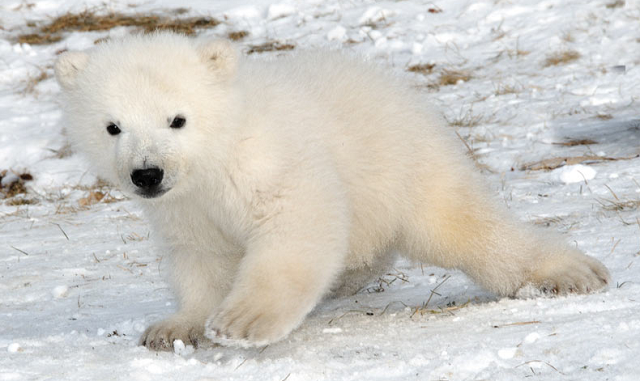

 El oso polar se distribuye en regiones árticas alrededor del Polo Norte. Algunos emigran durante el verano. Generalmente viven solos y sólo se buscan en época de apareamiento (marzo a junio). Son animales muy hábiles en el agua donde son capaces de nadar hasta a una velocidad de 6.5 Km/hr. Su mayor actividad parece estar destinada al primer tercio del día. Desde julio hasta diciembre suelen descansar aparentemente para ahorrar energía en forma de grasa. Solo las hembras hacen sus madrigueras cuando el tiempo es malo, especialmente las que están embarazadas, hibernando ahí por largos periodos de tiempo. El periodo de gestación dura aproximadamente 195 a 265 días. Durante la época de hibernación corporal. Se han encontrado madrigueras excavadas en el hielo de hasta 3 m. de profundidad. Las crías son ciegas al nacer y alcanzan un peso de 600 grs cada uno. En primavera la hembra sale con sus pequeños oseznos, ya con varios meses de edad y pesando de 10 a 15 Kg.
El panda, oso panda o panda gigante (Ailuropoda melanoleuca) es una especie de mamífero del orden de los carnívoros y aunque hay una gran controversia al respecto, los últimos estudios de su ADN lo engloban entre los miembros de la familia de los osos (Ursidae), siendo el oso de anteojos su pariente más cercano, si bien este pertenece a la subfamilia de los tremarctinos. Por otra parte, el panda rojo pertenece a una familia propia e independiente, Ailuridae. La especie está muy localizada. Nativo de China central, el panda gigante habita en regiones montañosas, principalmente las de Sichuan, hasta una altura de 3500 m s. n. m. Para el 2017 se estimó que la población total superaba los dos mil ejemplares2 de los que 1864 viven en libertad3, lo que demuestra que la cifra de pandas viviendo en libertad va en aumento. Desde 1961 el panda es el símbolo de WWF (Fondo Mundial para la Naturaleza).
El Tigre de Bengala, una de las seis subespecies de tigres que existen en el mundo, es el único felino de piel rayada. Sus grandes dimensiones le convierten en el mayor de los félidos (carnívoros que se alimentan, casi exclusivamente, de los animales que matan). Los bellísimos tigres blancos son una variedad del ejemplar de la India. Su color blanco roto o crema obedece a una mutación recesiva, es decir, a una mala transcripción del código genético en el gen responsable del color (cuando madre y padre son portadores de dicho gen). Tienen pupilas de color rosa e iris azul, generalmente. Las franjas son de tonalidades que van del gris tostado al negro.
Especie selvática por excelencia, vive allí donde abundan los félidos y está particularmente adaptado para la caza. Su pelaje le sirve para camuflarse entre las sombras de los árboles o la hierba. Patrulla su territorio por las noches, solitario; es muy sigiloso, tanto que parece que sus patas apenas toquen el suelo. Los tigres están en el top de depredadores, tan solo por detrás de los osos.En época de apareamiento, sin embargo, son sorprendentemente tiernos: macho y hembra se muestran muy tolerantes el uno con el otro. Alcanzan la madurez sexual a los tres años, y suelen tener camadas de dos a tres cachorros (después de 103 días de gestación)